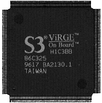

|  |
CyberVision64/3D - Direct ViRGE 3D SupportIf you know of any other programs or demos that use the ViRGE you can email vgr@best.com and I will add them here. cgx3dvirgin.library has been cleaned up and is now out. Making it work correctly with all the new ENVs and manpower where the main reasons for the delay. Plans to move the 3D function into the monitor driver are still up in the air. |
| Lib3D May 31, 1998 |
Copyright © 1998 VecTrace (Stefan Zivkovic)
Lib3d is a 3d library used for interfacing 3D hardware or native calls it is made for use in mine/your code and is written in C++ using the SAS compiler,
BUT could easily be transfered to other compilers. Why use lib3D? you may ask, I made this bunch of classes to use in my project if you like them you are
free to use them in yours also. Its like a wraparound C++ class for 3D-graphics using virgin.library and the virge 3D chip. My intensions is to make this as fast as posible. So i hopes folks out there comes with ideas of improvements Currently Its basicly 3 C++ classes: lib3d - The 3d library Texture - a texture DrawVector - a bunch of points and a bunch of info on how to draw triangles out of them
Using this classes means that you: |
Lib3D Page |
| ADescent March 22, 1998 |
ADescent now directly supports the ViRGE on the CV3D. You will need the cgx3dvirgin.library from the new ViRGE V1.3 demo archive on the V3 page. |
ADescent File Page CV3D-V3 page |
| IsisPPC March 9, 1998 |
Uses the ViRGE overlay video function. From the docs: IsisPPC is an MPEG Player for Amiga PPC computers. Some Features: - Starts from Workbench as well as from CLI - Display in 8/15/16/24 Bit on Workbench or any Public-Screen (auto-sensing) - Display in 8/15/16/24 Bit on CyberGraphX-Screens - Usage of the Video-Overlay in combination with the CyberVision64/3D - Control-Panel - Automatic resizing at window size change - VideoCD/CD-I support (using external drivers from BurnIt) - Audio support via AHI V4 - Supports MPEG audio layer I-III The CyberVision64/3D has a special feature compared to convential graphics cards: the overlay. An Overlay is in priciple a rectangular part of the screen, which cannot be hidden by windows or other picture elements. To put it in other words: an overlay is always the frontmost element in the hierarchy. Using the OVERLAY option has the following advantages: 1) The CPU doesn't have to perform a colour space conversion (the conversion from YUV to RGB data is done by the graphics card). 2) The graphics processor also scales the output. That means that it (virtually) doesn't matter if the video is shown in a small window or on the whole screen. So, with an overlay, the graphics output speed is increased strongly. Unfortunately, by using an overlay some parts of the original Amiga "look and feel" get lost. The screen on which an overlay is displayed cannot be dragged anymore. Further, it sometimes looks strange if one wants to drag another window on top of the IsisPPC window and the IsisPPC output covers that window. But this effect can be eliminated by using the COLORKEY option (other window can lay above the IsisPPC window then). |
IsisPPC Page |
| CyberVision64/3D Demos V1.3 March 5, 1998 |
CV3D 3D demo updated again. cgx3dvirgin.library updated again. | CV3D and V3 page |
| CyberPiPView February 28, 1998 |
Uses the ViRGE overlay video function. From the docs: CyberPiPView is another picture viewer with usage of the datatypes. This program uses the videolayer feature of a cv64/3d (currently PIV is not supported) to display pictures in 16bit no matter which resolution the current screen has (less than=8bit, 15/16/24bit). This means that any picture can be shown in up to 65536 colors even if the current screen just has 8 colors. The gfx processors automatically scales the picture to fit on the screen. When the window gets resized, the picture will be scaled, too. | CyberPiPView.lha: FTP - WWW |
| Tornado3D March 5, 1998 |
Tornado3D 1.0 has support for CyberVision64/3D's hardware Virge3D accelerator, Also high speed double buffering on CGFX compatible graphic cards even in 16/24 bit without memory cost. NOTE: The cgx3dvirgin.library does not come with the demo archive(s). It does come on then commercial CD-ROM release of Tornado3D. They have direct permission from the cgx3dvirgin.library author to only place it on the CD-ROM! | Tornado3D WWW Site |
| CyberVision64/3D Demos December 18, 1997 |
These were the first 4 demos that directly used the ViRGE. | CV3D and V3 page |
| cgx3dvirgin.library December 18, 1997 |
cgx3dvirgin.library... Phase5 keeps a directory for the ViRGE stuff at their Sliver and Gold Developer support web page. You must be a phase5 Sliver or Gold level developer and have your passowrd and user name to get access. This seems to be out dated most of the time. | Phase5 Developer Page WWW |
| CyberGL December 18, 1997 |
The next version of CyberGL should have direct ViRGE support or use the functions of the library/driver. | CyberGL Web Page |